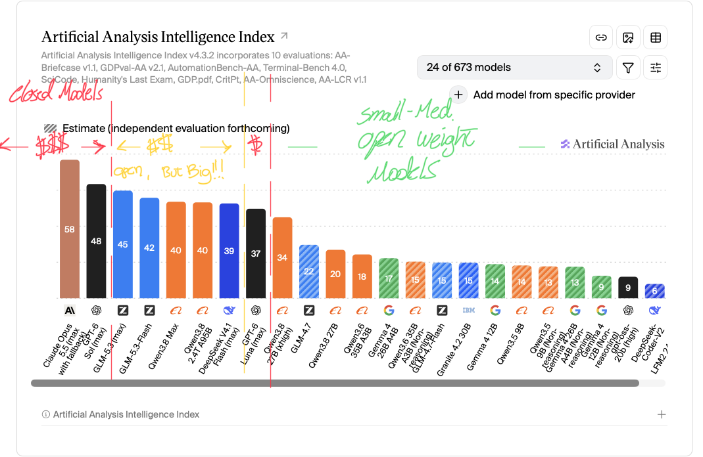
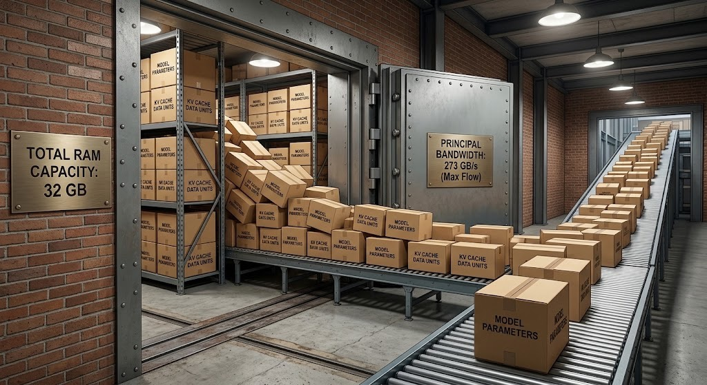

AISDLC Workshop
Frontier Quality
on Local Hardware
A practical guide to open-weight models, memory & bandwidth, inference servers, and harnesses.
Francisco Susana · github.com/franciscosuca
01 · Why local
AI is useful. So why run it yourself?
It all began on a 10-hour flight when I tried to code offline without Copilot. That curiosity led to early experiments running Ollama on an M1 inside VS Code — and the mistakes that came with it.
- OfflineThe model works on a flight, on a train, anywhere — no connection required.
- PrivacyYour data stays on your machine. Nothing leaves the room.
- Saving $You already paid for the hardware. Stop paying again for the tokens.
02 · The moment
Is there still a gap?
We put a local open-weight model, Qwen3.8-27B-MLX-4bit, up against a frontier model, gpt-6-luna.

03 · One key concept
Dense vs. sparse (MoE)
- DenseUses all parameters for each token — the generalist who brings the full toolkit every time.
- Sparse / MoEActivates selected experts per token — but all model weights still need to fit in memory.
Tools like LMFIT help match a model to your hardware.
04 · Hardware
The two hardware numbers
Local AI boils down to two numbers.
- RAMAnswers “can it fit?” Capacity decides whether the model runs at all.
- BandwidthHelps answer “how fast can it generate?” GB/s influences tokens per second.

Finding your bandwidth. Bandwidth = Bus Width (bits) × Transfer Rate (MT/s) / 8. This MacBook Pro M5 uses a 256-bit LPDDR5X bus at 8533 MT/s → 256 × 8533 / 8 ≈ 273 GB/s.
04 · Hardware — Capacity
RAM is the hard constraint
Model weights plus the KV cache must fit in memory. The KV cache holds your conversation so the model can attend to prior context — it grows with context length and depends on the architecture and cache precision.
| Model | Assumed architecture | Weights | KV @32K | KV @128K | KV @256K |
|---|---|---|---|---|---|
| Qwen3.8-27B-MLX-4bit | Dense; 27B parameters | ~14.5 GB | ~6 GB | ~24 GB | ~48 GB |
| Gemma-4-26B-A4B-it-QAT-MLX-4bit | MoE; 26B total / 4B active | ~14 GB | ~3 GB | ~13 GB | ~26 GB |
| Qwen3.5-9B-MLX-4bit | Dense; 9B parameters | ~5 GB | ~4.5 GB | ~18 GB | ~36 GB |
Assumptions: 4-bit weights ≈ 0.5 bytes/param + ~7% overhead. Apple reserves ~25% of memory for the system — leaving roughly 75% available for models. This can be adjusted (e.g. via memory allocation settings), but the system may not run stably if you push it too far.
04 · Hardware — Speed
Bandwidth is the speed
RAM is whether the car fits in the garage.
Bandwidth is how quickly it travels on the highway.
Rule of thumb: tokens/s ≈ memory bandwidth (GB/s) ÷ GB of weights read per generated token. Indicative output rates on a MacBook Pro M5 (~273 GB/s):
- ~20 tok/sQwen3.8-27B dense.
- ~110 tok/sGemma-4 A4B MoE — only ~2.5 GB of active weights per token.
- ~60 tok/sQwen3.5-9B dense.
These are the speeds for running the models in 4-bit. Real results are often 60–80% of these and depend on hardware, runtime, context length, and implementation. Input prefill is often faster than token generation; the two have different performance characteristics.
05 · Software
Two layers: server + harness
| Layer | What it does | Examples |
|---|---|---|
| Server | Runs the model. Turns the weights into a running engine. | Ollama · vLLM · MLX · llama.cpp |
| Harness | Supplies the prompt and presents the result. Your interface to the model. | LM Studio · VSCode · Codex · Pi |
05 · Software — Server
Choose a server, keep the defaults
- MLXOptimized for Apple Silicon. Best performance on a Mac.
- GGUFCross-platform. Runs everywhere — not always as optimized on Mac.
05 · Software — Harness
The harness tax
- Heavier IDEs(e.g. VS Code) may add system and context overhead to every request — consuming the context window you paid for in RAM.
- Lighter clients(e.g. Pi) leave more of the context window for your actual prompt.
06 · Closing
An honest take
Frontier tools are easier — and they remain a strong choice. Zero setup, excellent answers.
But local models can be sufficient for many everyday tasks — writing, coding, research, brainstorming. The trade-offs are privacy, cost, and availability, and they're worth weighing honestly.
We're no longer talking about someday
The question isn't whether local AI can compete.
It's whether you're ready to stop paying for what you can run yourself.
Thank you.